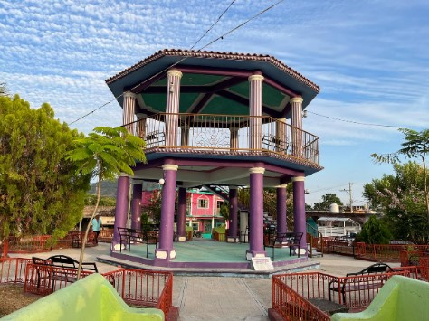
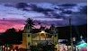
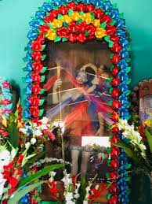
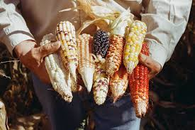

✍️ Nombre oficial
San Cristóbal es el nombre completo de la localidad. A pesar de su importancia histórica y social, la comunidad ha experimentado cambios significativos en su composición demográfica.

🏘️ Origen del nombre
● San Cristóbal: En honor a San Cristóbal, un santo cristiano conocido como el patrón de los viajeros.
● Chayuco: Palabra de origen mixteco. Aunque no hay un significado universalmente aceptado, se cree que hace referencia a un rasgo geográfico o cultural propio de la región.

🧑🏽🤝🧑🏼 Gentilicio
Los habitantes de San Cristóbal son llamados tobeños(as).

🕌 Monumentos y lugares de interés
- La Iglesia, el templo principal
- Plaza principal, donde se llevan a cabo eventos y ferias
- Paisajes naturales, cuenta con montañas, ríos y vegetación propia de la mixteca-costeña

📜 Historia y antecedentes
- Su origen se remonta a tiempos prehispánicos, cuando grupos indígenas mixtecos habitaban la zona
- Durante la época colonial, el pueblo adquirió el nombre de San Cristóbal debido a la evangelización
- Forma parte de los municipios que conservan tradiciones indígenas en Oaxaca

🎭🥘 Cultura y tradiciones
- Fiesta patronal: Se celebra en honor a San Cristóbal, con misas, música y eventos tradicionales
- Danzas y música: Se preservan bailes típicos y música regional mixteca
- Gastronomía: Platillos típicos de la región como caldo de res, frijol

🛍️ Economía y actividades principales
- Agricultura: Cultivo de maíz, frijol y productos de la región
- Ganadería: Cría de animales para consumo local
- Artesanías: Producción de textiles y objetos tradicionales mixtecos